COGA · curso 2
1. Introducción · COGA
1.1 Introducción
El ojo humano percibe el movimiento de manera continua captando numerosas imágenes estáticas que el cerebro usa para dar sensación de fluidez.
- Persistencia: fenómeno por el cual una imagen permanece durante un breve periodo después de que la fuente de luz haya desaparecido. Permite ver secuencias de imágenes como un movimiento continuo
- Motion Blur (desenfoque de movimiento): efecto de desenfoque que ocurre cuando un objeto en movimiento rápido deja una estela en la imagen. En el cine se usa para hacer el movimiento más realista.
Las imágenes en movimiento que vemos se forman con una serie de imágenes fijas mostradas en rápida sucesión.
- Frecuencia de refresco: cuántas veces por segundo se actualiza una imagen en una pantalla. Para simular la visión humana se necesitan
1.2 Hardware Gŕafico (TRC)
El tubo de rayos catódicos (TRC) consiste en un haz de
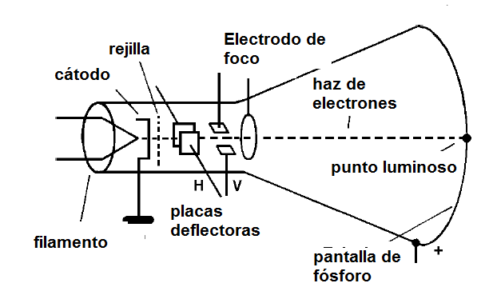
1.2.1 Terminales Vectoriales
Terminales vectoriales: TRC en el que el haz de
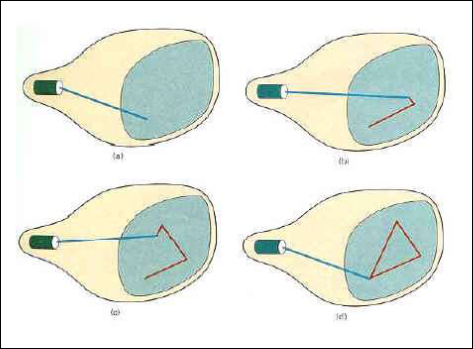
- Unidad de Procesamiento de la Terminal Gŕafica: procesa las órdenes de dibujo y las traduce en comandos para la pantalla. Accede y actualiza la memoria de refresco para mantener la imagen visible
- Memoria de refresco: almacena las instrucciones necesarias para redibujar la imagen en la pantalla constantemente para que no desaparezca.
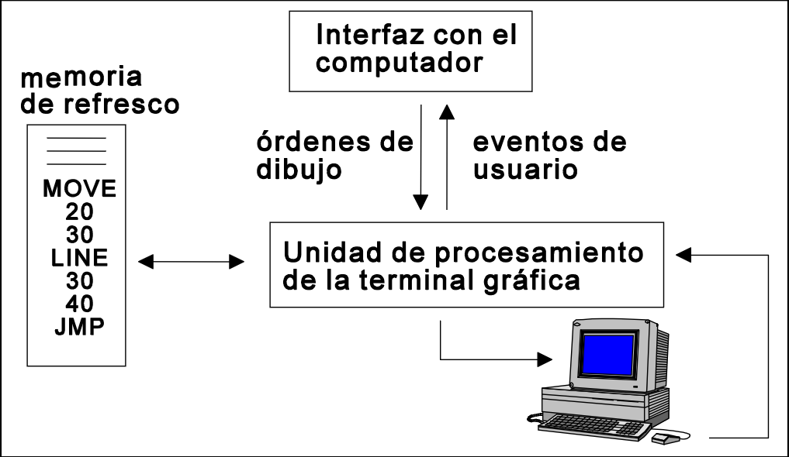
1.2.2 Terminales Raster
Terminales raster: TRC en el que el haz de
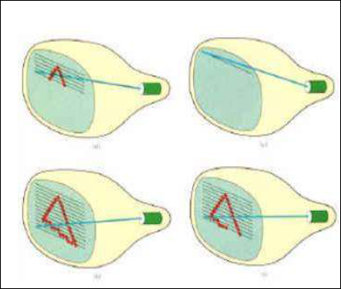
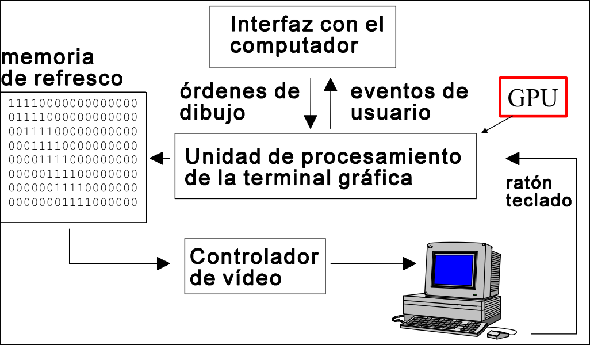
El conjunto de valores de los píxeles se almacena en una zona de memoria denominada Frame-Buffer. El dispositivo o aplicación varía sus valores y estos se vuelcan (swap) a la pantalla en un momento dado.
La profundidad de color (
-> los valores de los pixeles son tonos RGB -> se usa el modelo RGB estándar - Para obtener el color real se necesitan 8 bits para cada color (RGB) y otros 8 (A)de transparencia, en total 32 (RGBA).
- Para ahorrar memoria, se puede usar una pelta LUT con una entrada para cada posible valor de un píxel en una imagen, permitiendo indexa los colores usando el mínimo número de bits posible.
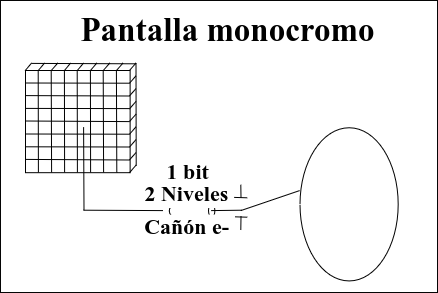
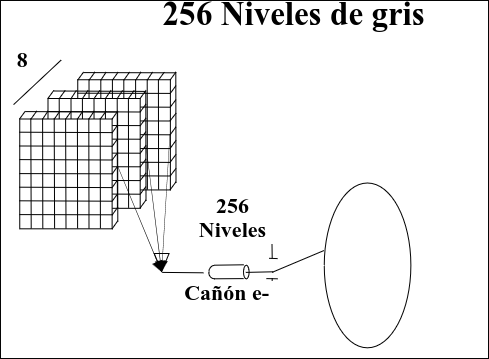
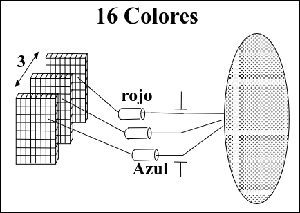
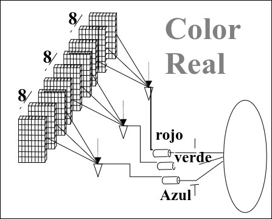
Otros tipos de terminales ráster con distintas bpp, frecuencia de refresco y resolución son pantallas de plasma, LC, LED, OLED, etc.
Las 625 líneas se abandonaron rápidamente s estas estaban limitadas debido a la capacidad de emisión. Al poder procesar más píxeles y aumentar la velocidad de refresco se disminuye el cansancio ocular del usuario.
1.3 Conceptos Básicos
- Ráster: representación de imágenes como una matriz de píxeles.
- Pixel (picture element): cada uno de los puntos de color que se muestran en una pantalla
- Gráficos vectoriales: formato de imagen compuesto por objetos geométricos (puntos, líneas, polígonos), cuyos atributos matemáticos se almacenan. Permiten modificar el tamaño de una imagen sin pérdidas de calidad.
- Renderizado: proceso de creación de una imagen a partir de un modelo, calculando el color de cada píxel en la imagen según las propiedades del modelo.
1.3.1 Double buffer
Se usan dos frame buffer:
- Un buffer primario cuyo contenido se muestra por pantalla.
- Un buffer secundario o trasero en el que se realiza el renderizado de las imágenes. Cuando se termina de renderizar en el buffer secundario, se copia su contenido al principal. Así se evita que el espectador pueda ver el cambio entre frames si no se renderiza lo suficientemente rápido.
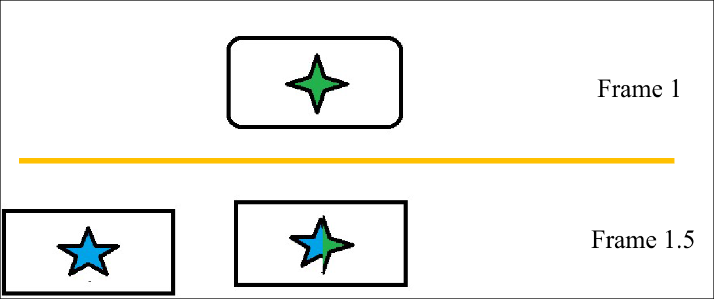
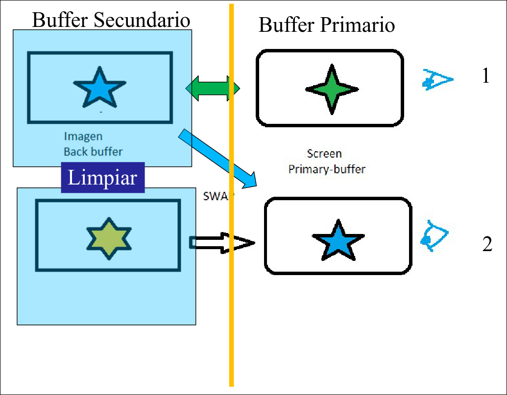
- Se dibuja en el buffer secundario - Una vez lista la imagen, se realiza un **swap**, mostrando instantáneamente el nuevo frame en el buffer primario. - Se limpio el buffer secundario y se repite.1.3.2 Depth Buffer
El Z-Buffer o buffer de profundidad se usa para gestionar la profundidad de los objetos y resolver cuáles son visibles y cuáles están detrás de otros. Tiene el mismo ancho y alto que el frame-buffer y una profundidad de 16, 24, o 32 bits.
Cada píxel tiene un valor de profundidad (Z) que indica su distancia con respecto a la cámara, de manera que cuando se renderiza un nuevo pixel se comprar su valor con el del anterior. En función del resultado, lo reemplazará o será descartado.
El algoritmo del pintor consiste en dibujar los objetos de atrás hacia adelante, ordenándolos según su coordenada Z (de mayor a menor). Si dos objetos intersecan, no sabe determina cuál debe dibujarse primero.
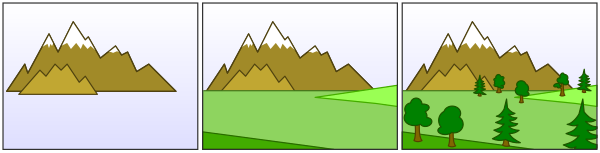
1.4 Modelo de Cámara Sintética
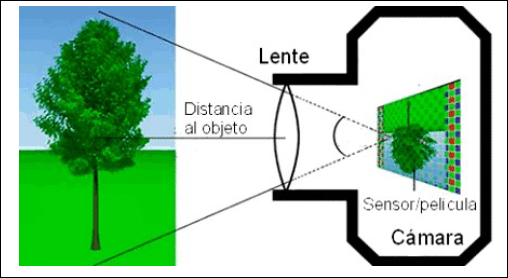
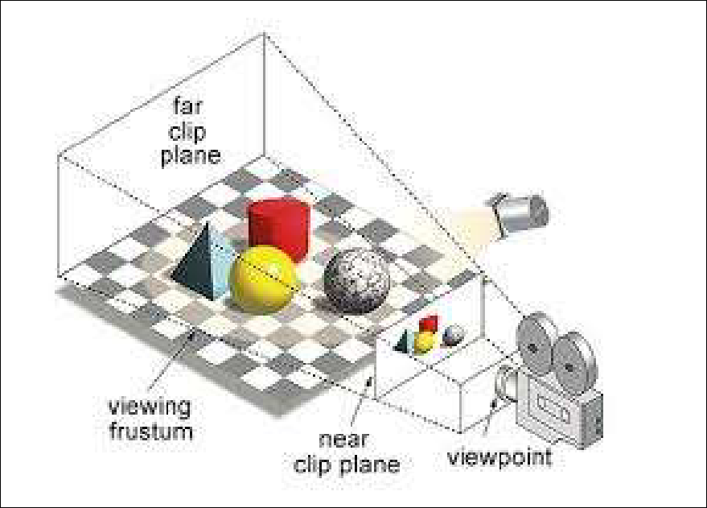
Elementos de una escena 3d: - Geometría - Texturizado - Iluminación - Cámara1.5 Pipeline
Pipeline gráfica: modelo conceptual que describe los pasos que un sistema gráfico debe dar para renderizar una escena 3D en una pantalla 2D.
- Vertex Shader:
- Recibe la posición del vértice del triángulo + otros datos (coordenadas de textura, normal, color, etc.)
- Devuelve el vértice con su posición transformada + (opcionalmente) otros atributos (normal, color, etc), que se envían al siguiente paso en la pipeline.
- Fragment Shader:
- Recibe información del fragmento a procesar, que puede incluir datos interpolados desde los vértices (coordenadas de textura, normal, color, etc.)
- Devuelve el color final del píxel si este se debe representar en pantalla.
- Procesos posteriores:
- Z-BUFFER: controla la profundidad de los píxeles para manejar la superposición de objetos en la escena
- Alpha Test: determina si un objeto debe renderizarse en función de su transparencia
- Blending Test
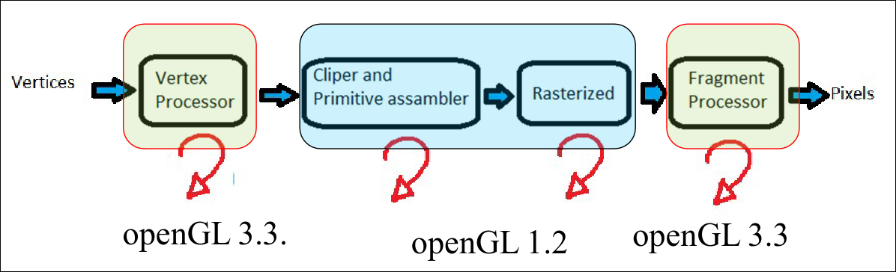
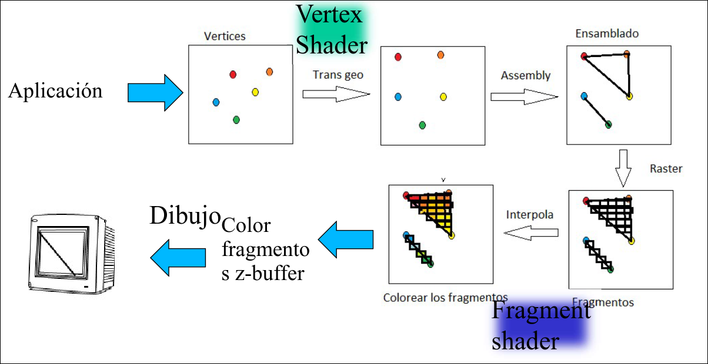